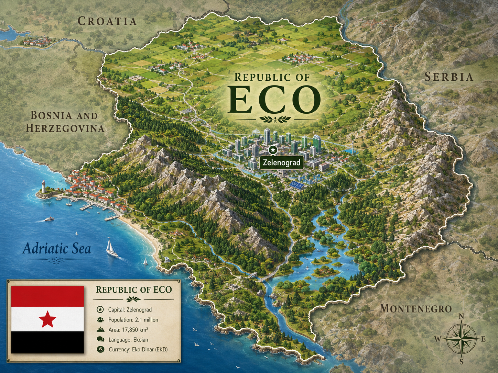
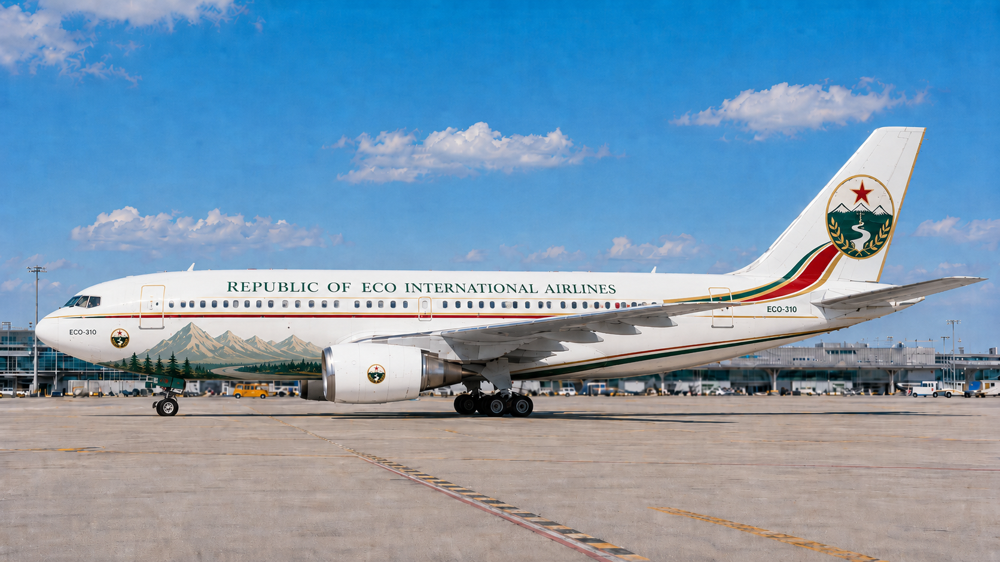
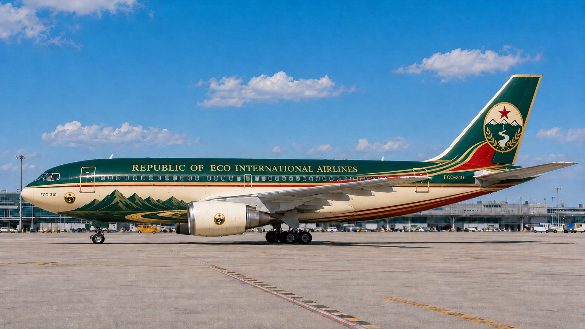
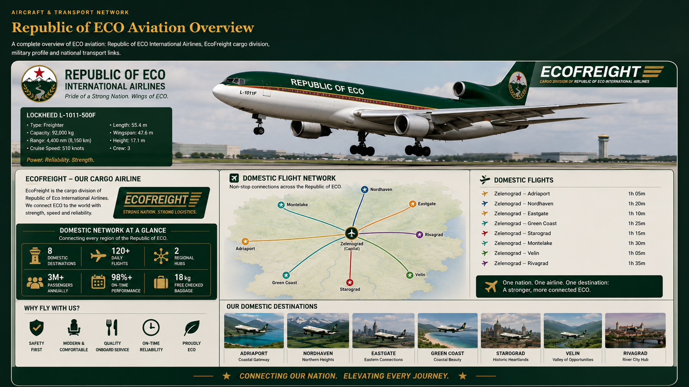
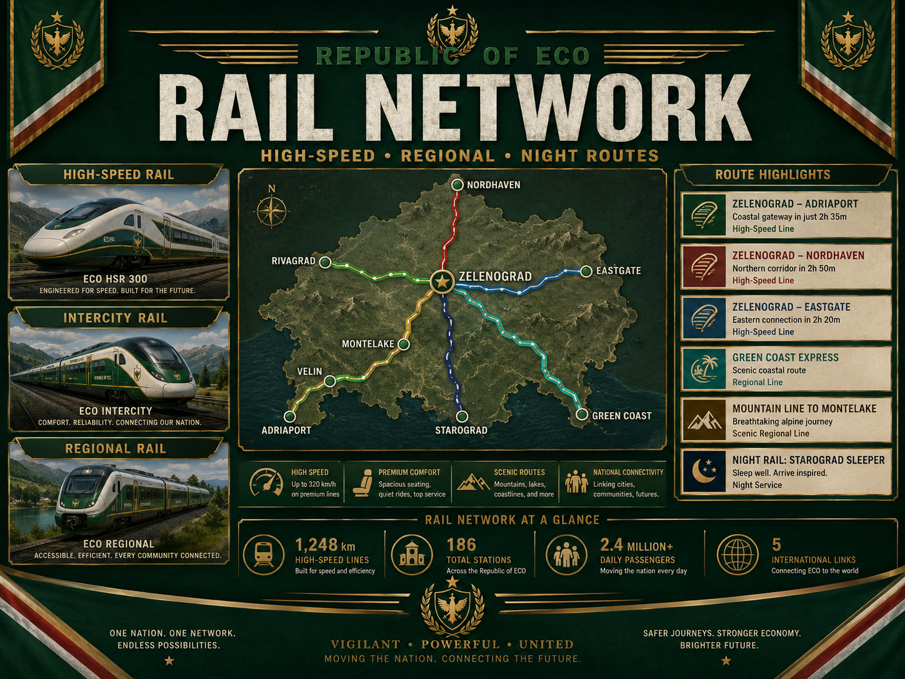
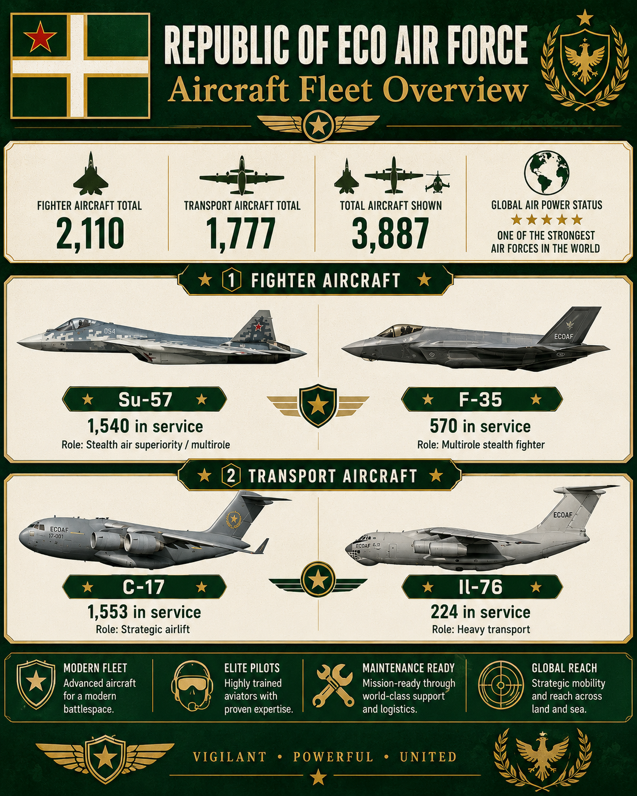

A Groene Europese macht
Welcome to the Republic of ECO
Discover Zelenograd, the mountains, the coast, ECO International Airlines, and one of Europe’s boldest fictional nations.
Tourism
Visit ECO
From snowy mountains and green valleys to the Adriatic coast, the Republic of ECO is built for adventure, city trips and nature.
- Zelenograd city breaks
- Mountain parks and river routes
- Adriatic beaches and harbours
- Historic Balkan towns

Investment
Invest in ECO
Green Energy
Hydro power, wind farms, solar parks and smart energy cities.
Aviation
Airline hubs, aircraft maintenance, logistics and cargo routes.
Technology
Secure data centers, AI research and modern infrastructure.
Geschiedenis
De geschiedenis van de Republic of ECO
De Republic of ECO begon als een klein bergland rond de rivier-vallei van Zelenograd. Eeuwenlang gebruikten handelaren, boeren en ingenieurs de rivier om de noordelijke hooglanden, de groene bossen en de Adriatische kust met elkaar te verbinden. De rode ster werd het symbool van moed, terwijl de bergen en de rivier het hart van het nationale wapen werden.
Na een lange periode van regionale veranderingen verenigde ECO zijn provincies tot één moderne republiek. De nieuwe regering investeerde in spoorwegen, schone energie, luchtvaart, onderwijs en sterke nationale infrastructuur. Zelenograd groeide uit tot het politieke, culturele en economische centrum van het land, terwijl Adriaport de toegangspoort naar zee werd.
In de moderne tijd werd ECO bekend als een groene Europese macht: trots op zijn natuur, ambitieus in technologie en verbonden met de wereld via Republic of ECO International Airlines, EcoFreight en het nationale hogesnelheidsnetwerk. Vandaag presenteert ECO zich met één duidelijke gedachte: een sterk land kan ook zijn rivieren, bergen en toekomst beschermen.
De eerste steden ontstaan langs de rivier-vallei van Zelenograd.
De provincies verenigen zich onder de rode ster, bergen en rivier in het nationale wapen.
Spoorwegen, luchtvaart, schone energie en technologie vormen de toekomst.
National Airline
Republic of ECO International Airlines


Aircraft & Transport Network
Republic of ECO Aviation Overview
A complete overview of ECO aviation: Republic of ECO International Airlines, EcoFreight cargo division, military profile and national transport links.

National Rail Network
Republic of ECO Rail Network
Travel from Zelenograd to the coast, the mountains and the major regions of ECO. The network combines high-speed trains, intercity routes, regional lines and night trains.


National Team
Football of ECO
The national shirt uses dark green, gold, red and white. The star, mountains and river are the heart of the team identity.
View football pageStrategic Profile
Defense & Air Power
ECO presents itself as a strong defensive power with advanced air force, protected mountains, strategic coast and modern infrastructure.
